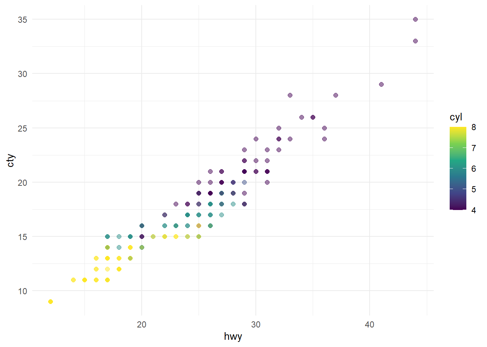

Code
library(tidyverse)deploy with
quarto publish quarto-pub 00-quarto-observable-basics.qmd
quarto publish quarto-pub <filename>.qmdI’m a div but R will wrap me within a <p></p>
Note that there are five types of callouts, including: note, warning, important, tip, and caution.
I’m a div but R will wrap me within a <p></p>
Funny how important is more urgent than warning…
This is an example of a callout with a caption.
This is an example of a ‘folded’ caution callout that can be expanded by the user. You can use collapse="true" to collapse it by default or collapse="false" to make a collapsible callout that is expanded by default.
I’m even more minimal
library(tidyverse)ggplot(mpg, aes(x = hwy, y = cty, color = cyl)) +
geom_point(alpha = 0.5, size = 2) +
scale_color_viridis_c() +
theme_minimal()
head(mtcars) mpg cyl disp hp drat wt qsec vs am gear carb
Mazda RX4 21.0 6 160 110 3.90 2.620 16.46 0 1 4 4
Mazda RX4 Wag 21.0 6 160 110 3.90 2.875 17.02 0 1 4 4
Datsun 710 22.8 4 108 93 3.85 2.320 18.61 1 1 4 1
Hornet 4 Drive 21.4 6 258 110 3.08 3.215 19.44 1 0 3 1
Hornet Sportabout 18.7 8 360 175 3.15 3.440 17.02 0 0 3 2
Valiant 18.1 6 225 105 2.76 3.460 20.22 1 0 3 1plot(mtcars)
labels <- c("Custom Title from R Object", "Custom Label")
ojs_define(labels = labels)
data_processed <- mtcars %>%
tibble::rownames_to_column(var = "brand") head(data_processed) brand mpg cyl disp hp drat wt qsec vs am gear carb
1 Mazda RX4 21.0 6 160 110 3.90 2.620 16.46 0 1 4 4
2 Mazda RX4 Wag 21.0 6 160 110 3.90 2.875 17.02 0 1 4 4
3 Datsun 710 22.8 4 108 93 3.85 2.320 18.61 1 1 4 1
4 Hornet 4 Drive 21.4 6 258 110 3.08 3.215 19.44 1 0 3 1
5 Hornet Sportabout 18.7 8 360 175 3.15 3.440 17.02 0 0 3 2
6 Valiant 18.1 6 225 105 2.76 3.460 20.22 1 0 3 1notice the
<script type="ojs-define">entry in the HTML document’s<head />
ojs_define(mtcarsJS = data_processed)Object.entries(mtcarsJS)note the
transpose()
Inputs.table(transpose(mtcarsJS))This example uses a D3 bubble chart imported from Observable HQ to analyze commits to GitHub repositories.
Select a repository to analyze the commits of:
Fetch the commits for the specified repo using the GitHub API:
d3 = require('d3')
contributors = await d3.json(
"https://api.github.com/repos/" + repo + "/stats/contributors"
)
commits = contributors.map(contributor => {
const author = contributor.author;
return {
name: author.login,
title: author.login,
group: author.type,
value: contributor.total
}
})Note that the repo variable is bound dynamically from the radio input defined above. If you change the input the contributors query will be automatically re-executed.
Object.entries(commits)View the commits sorted by most to least:
Inputs.table(commits, { sort: "value", reverse: true })Visualize using a D3 bubble chart imported from Observable HQ:
import { chart } with { commits as data }
from "@d3/d3-bubble-chart"
chartimport {x11colors} from "@observablehq/input-select"
x11colors = ["aliceblue", "antiquewhite", "aqua", "aquamarine", "azure", "beige", "bisque", "black", "blanchedalmond", "blue", "blueviolet", "brown", "burlywood", "cadetblue", "chartreuse", "chocolate", "coral", "cornflowerblue", "cornsilk", "crimson", "cyan", "darkblue", "darkcyan", "darkgoldenrod", "darkgray", "darkgreen", "darkgrey", "darkkhaki", "darkmagenta", "darkolivegreen", "darkorange", "darkorchid", "darkred", "darksalmon", "darkseagreen", "darkslateblue", "darkslategray", "darkslategrey", "darkturquoise", "darkviolet", "deeppink", "deepskyblue", "dimgray", "dimgrey", "dodgerblue", "firebrick", "floralwhite", "forestgreen", "fuchsia", "gainsboro", "ghostwhite", "gold", "goldenrod", "gray", "green", "greenyellow", "grey", "honeydew", "hotpink", "indianred", "indigo", "ivory", "khaki", "lavender", "lavenderblush", "lawngreen", "lemonchiffon", "lightblue", "lightcoral", "lightcyan", "lightgoldenrodyellow", "lightgray", "lightgreen", "lightgrey", "lightpink", "lightsalmon", "lightseagreen", "lightskyblue", "lightslategray", "lightslategrey", "lightsteelblue", "lightyellow", "lime", "limegreen", "linen", "magenta", "maroon", "mediumaquamarine", "mediumblue", "mediumorchid", "mediumpurple", "mediumseagreen", "mediumslateblue", "mediumspringgreen", "mediumturquoise", "mediumvioletred", "midnightblue", "mintcream", "mistyrose", "moccasin", "navajowhite", "navy", "oldlace", "olive", "olivedrab", "orange", "orangered", "orchid", "palegoldenrod", "palegreen", "paleturquoise", "palevioletred", "papayawhip", "peachpuff", "peru", "pink", "plum", "powderblue", "purple", "rebeccapurple", "red", "rosybrown", "royalblue", "saddlebrown", "salmon", "sandybrown", "seagreen", "seashell", "sienna", "silver", "skyblue", "slateblue", "slategray", "slategrey", "snow", "springgreen", "steelblue", "tan", "teal", "thistle", "tomato", "turquoise", "violet", "wheat", "white", "whitesmoke", "yellow", "yellowgreen"]viewof color = Inputs.select(x11colors, {value: "steelblue", label: "Favorite color"})html`<div style="background: ${color}; width: 100%; height: 25px;">`